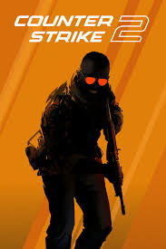
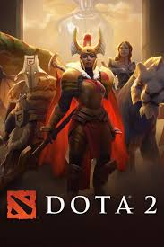

Minecraft
Компьютерная инди-игра в жанре песочницы, созданная шведским программистом Маркусом Перссоном и выпущенная его студией Mojang AB.
🟢- легко вернуться.

Counter strike 2
Серия компьютерных игр в жанре командного шутера от первого лица, основанная на движке GoldSrc и выросшая из одноимённой модификации игры Half-Life.
🔴- трудно вернуться.

Dota 2
Многопользовательская командная компьютерная игра в жанре MOBA, разработанная и изданная корпорацией Valve.
🔴- трудно вернуться